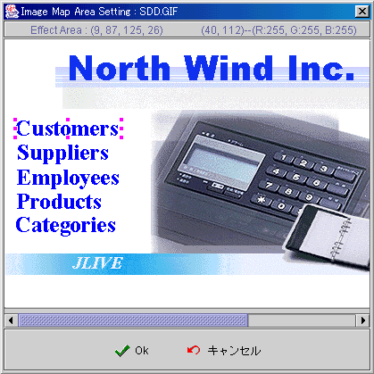

ワーク画面：
-
機能区域：引用機能できる範囲 (左，上，幅，高)。
-
マウスの位置：(X，Y)。
-
マウス位置のカラー：(R，G，B)。
-
ピンク色ポイント：機能区域の表示。
-
機能区域サイズの調整：マウスでポイント枠を拡大か縮小。
-
機能区域の移動：ポイントを押したままマウスを移動。

フォーミュラget/setプロパティ
(formula get/set properties)
SetProp("コンポーネント名",
"プロパティ", 値) ：プロパティの設定。
SetProp("コンポーネント名",
"プロパティ", 値1, 値2)：プロパティの設定。
GetProp("コンポーネント名",
"プロパティ")：プロパティの読取。
| Set
Properties |
| プロパティ
(Properties) |
値1
(Value 1) |
値2
(Value 2) |
説明 (Descriptions) |
| enabled |
1 使用可能，0 無効 |
|
使用可能と無効。 |
| setfocus |
1 Focus設定 |
|
Focus設定。 |
| visible |
1 表示，0 隠し |
|
表示と隠し。 |
| repaint |
1 再描く，2 即再度描く |
|
再描く。 |
| revalidate |
1 |
|
コンポーネントリロード。 |
| Get
Properties |
| プロパティ
(Properties) |
値転送
(Return value) |
説明 (Descriptions) |
| isenabled |
1 使用可能，0 無効 |
使用可能と無効。 |
| isvisible |
1 表示，0 隠し |
表示と隠し。 |
▲Top
Copyright © 2001~
2004 Probe Technology . All Rights Reserved.
Questions, comments,
and suggestions to Service@probe.com.tw